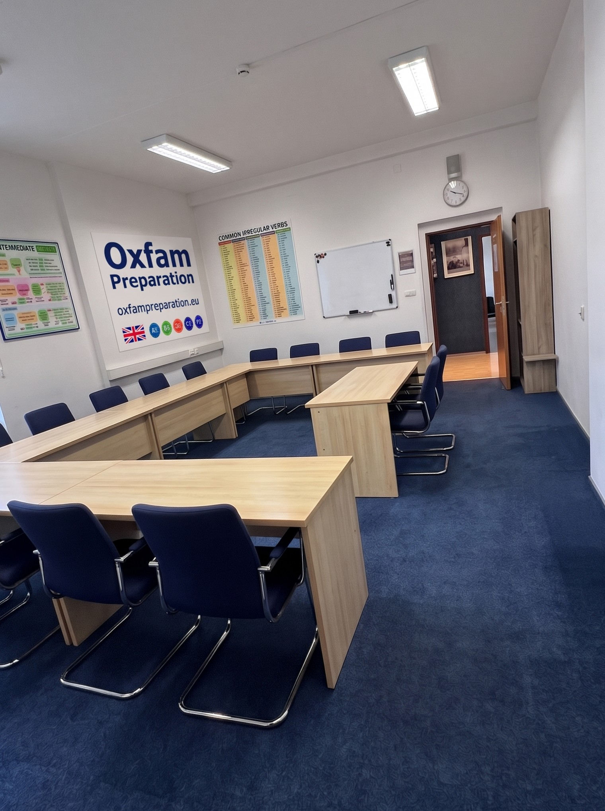
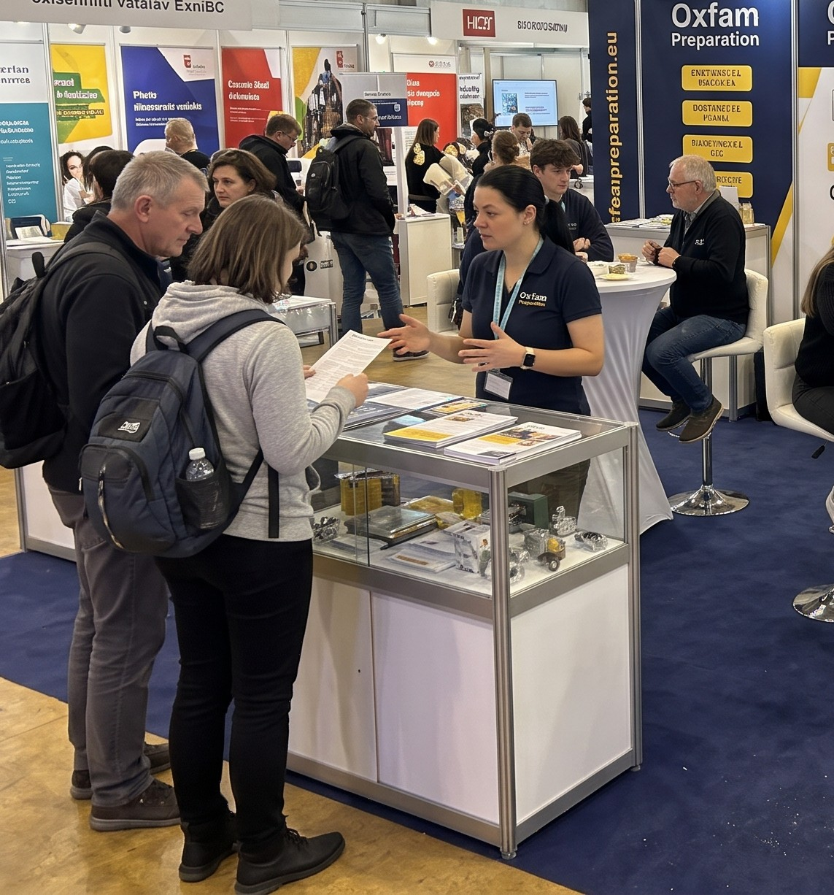

2026
Účast na vzdělávacím veletrhu Gaudeamus
Představili jsme naše přípravné kurzy a sadu testů 2026 studentům středních škol i pedagogům.
Přehled všech článků, tipů ke zkouškám Cambridge English a novinek centra Oxfam Preparation (2020–2026).
Zkuste upravit hledaný výraz nebo přepnout na všechny roky.
Představili jsme naše přípravné kurzy a sadu testů 2026 studentům středních škol i pedagogům.

CHODOVRozšířili jsme naše centrum v Office Centru Park Chodov o nové klimatizované učebny a zkušební místnosti pro počítačové testy.
Jak odhalit obrat názoru mluvčího v polovině věty a nenaletět na doslovná slova ze zadání.
Doplnili jsme sady pro B1 Preliminary, B2 First, C1 Advanced a C2 Proficiency s okamžitým hodnocením.
Proč je klíčové hlídat limit 2–5 slov, neměnit zadané slovo a rozdělit si transformaci na dva kroky.
Návod, jak propojit dva výchozí texty vlastními slovy a získat plný počet bodů za kohezi.
Užitečné obraty pro porovnávání fotografií a spekulaci v B2 First a C1 Advanced na celou minutu.
Přehled záporných předpon (un-, in-, dis-, il-, ir-) a pravopisných chytáků v B2 First a C1 Advanced.
Srovnání platnosti certifikátů, struktury testů a požadavků českých i zahraničních univerzit.
Metoda, jak rychle porovnat názory čtyř akademiků na stejné téma bez zmatku v poznámkách.

SCHOLAV Kongresovém centru Praha jsme žákům základních škol, rodičům i pedagogům představili přípravu na A2 Key a B1 Preliminary.
Týdenní harmonogram procvičování všech čtyř dovedností bez zbytečného stresu na poslední chvíli.
Přehled klíčových vazeb pro Use of English Part 1 a Part 4 včetně příkladových vět.
Stejný mezinárodní certifikát s neomezenou platností, ale témata blízká studentům ZŠ a SŠ.
Klíčová slovní zásoba pro popis trendů, nárůstů a srovnání dat v rozsahu 150 slov.
Techniky skimming a scanning v praxi: jak se nezaseknout u neznámých slovíček v Readingu.
Jak správně odlišit registr jazyka, oslovení a zakončení textu, abyste neztráceli body za styl.
Získali jsme hlavní cenu za inovace ve vzdělávání a přístupnost digitálních materiálů.
Členy, předložky, vztažná zájmena a spojky, které tvoří až 80 % všech mezer v Part 2.
Praktické tipy pro rodiče i mladší studenty, jak proměnit přípravu na A2 Key v zábavný návyk.
Sledujte zájmena, časové odkazy a kontrastní spojky na začátku a konci každého odstavce.
Fráze pro zdvořilé nesouhlasné reakce, přebírání slova a společné shrnutí na konci úlohy.
Zapojili jsme dalších 15 středních škol do programu dotovaného testování nanečisto.
Dvoutýdenní prázdninové soustředění absolvovalo 48 studentů s 96% úspěšností u ostrých zkoušek.
Doporučené pořady BBC Radio 4 a akademické diskuze, které zlepší váš poslech přirozenou cestou.
Přehled termínů, do kdy musíte odevzdat certifikát B1/B2 řediteli školy a jak požádat o uznání.
Přidali jsme přes 10 nových testů s automatickým vyhodnocením a historií výsledků.
Vysvětlení bodového systému od 120 do 230 bodů a jak se počítá celková známka ze čtyř částí.
Nahraďte opakující se „but“ a „also“ elegantními obraty jako Nevertheless, Furthermore či Consequently.
Pro vyjádření kontrastu použijte Nevertheless, On the contrary, Notwithstanding; pro přidání argumentu Furthermore, Moreover, In addition; a pro vyjádření důsledku Consequently, Therefore, As a result. Pamatujte na správnou interpunkci – za spojovacími výrazy na začátku věty vždy píšeme čárku.
Otevřeli jsme pravidelná odpolední setkání zaměřená na mluvený projev bez strachu z chyb.
Každý pátek odpoledne pořádáme v našem centru na Chodově neformální diskuzní setkání pod vedením Astrid Bohengun-Smith MSc. a Jamese Whitakera, B.A., kde studenti trénují rychlé reakce na témata ze Speaking Part 4.
Kdy propojit minulou podmínku s přítomným následkem a jak tyto věty poznat v Use of English.
Smíšené kondicionály propojují dvě různá časová období: „If I had accepted that job offer last year (minulost), I would live in London now (přítomnost).“ Tento jev se pravidelně testuje v Key Word Transformations.
Výhody sluchátek u poslechu, automatického počítadla slov u psaní a rychlejšího doručení výsledků.
Obsah, obtížnost i hodnota certifikátu jsou u obou verzí totožné. Počítačová verze (Cambridge English Qualifications Digital) však nabízí vlastní sluchátka s regulací hlasitosti, automatické počítadlo slov u psaní a výsledky již do 5–10 pracovních dnů.
Pokročilá gramatická struktura, která zaručeně zaujme hodnotitele v eseji i v Part 4.
Pokud pro důraz postavíte na začátek věty záporné příslovce (Never, Rarely, Seldom, Not only, Under no circumstances), následuje tázací slovosled: „Not only did she pass the exam, but she also achieved the highest score.“
Jak správně převádět neosobní vazby v transformacích vět u zkoušek B2 First a C1 Advanced.
Větu „People believe that the castle is haunted“ lze přepsat dvěma způsoby: „It is believed that the castle is haunted“ nebo „The castle is believed to be haunted“.
Jak si rychle načrtnout osnovu na kartičku, abyste dokázali plynule mluvit celé dvě minuty.
Během 60 sekund přípravy nepište celé věty – napište si jen 4 až 5 klíčových slov ke každému bodu na kartičce (Cue Card) a přidejte dvě pokročilá přídavná jména, která chcete v dvouminutovém monologu použít.
Studenti našich kurzů si nyní mohou zdarma půjčovat přes 250 titulů pro úrovně A2 až C2.
Na naši pobočku v Office Centru Park Chodov dorazila nová zásilka více než 250 cvičebnic, gramatických příruček a zjednodušené četby (Graded Readers) pro úrovně A2 až C2. Všichni studenti našich kurzů mají výpůjčky zdarma.
Proč „eventually“ neznamená eventuálně a „sympathetic“ není sympatický – přehled nejčastějších záměn.
Jak zaujmout čtenáře hned v prvním odstavci, vyvážit klady a zápory a zakončit jasným doporučením.
Recenze knihy, filmu nebo aplikace by měla mít chytlavý titulek, živější styl než formální esej, pestrá hodnoticí přídavná jména (gripping, thought-provoking, overpriced) a jasné doporučení v závěru.
Tipy, jak se vyhnout nejčastějším chybám v eseji u zkoušek B2 First a C1 Advanced.
Každý odstavec eseje by měl začínat tzv. topic sentence – větou, která čtenáři hned sdělí hlavní myšlenku odstavce, a následně ji rozvést konkrétním příkladem.
Přehled 30 nejčastějších spojení přídavných jmen a předložek pro B1 Preliminary a B2 First.
Pamatujte si, že pokud po předložce následuje sloveso, musí být vždy ve tvaru s koncovkou -ing: interested in learning, capable of solving, responsible for organising, keen on travelling.
Doporučené současné romány a povídky, které přirozeně rozšíří vaši pasivní i aktivní slovní zásobu.
Vyberte si knihu, u které rozumíte zhruba 90 % textu na stránce, a neznámá slova vyhledávejte jen tehdy, když se v knize opakují. Tím udržíte plynulost čtení a přirozeně si osvojíte anglický slovosled.
Přivítali jsme první studenty v bezbariérových prostorách na adrese V Parku 2316/8 v Praze 4.
Přestěhovali jsme naše pražské zázemí do moderních bezbariérových prostor v budově Office Centrum Park Chodov (V Parku 2316/8, Praha 4), pouhé 3 minuty chůze od stanice metra C – Chodov.
Rozdíl mezi „stop smoking“ a „stop to smoke“ vysvětlený na jasných příkladech ze zkoušek.
Například „remember locking the door“ znamená pamatovat si, že jste už zamkli (vzpomínka), zatímco „remember to lock the door“ znamená nezapomenout zamknout (úkol do budoucna).
Přesný časový rozvrh pro 75 minut v B2 First a 90 minut v C1 Advanced včetně přepisu odpovědí.
U papírové verze B2 First máte 75 minut na 7 částí. Doporučujeme strávit maximálně 25 minut na Use of English (Parts 1–4), 40 minut na delší texty Readingu (Parts 5–7) a posledních 10 minut si nechat na pečlivý přepis odpovědí do záznamového archu.
Jak správně použít vazby „Could you tell me where...“ bez zbytečného pomocného slovesa do/did.
Když otázku uvodíte zdvořilou frází jako „Could you tell me...“ nebo „Do you know...“, zbytek věty má oznamovací slovosled: „Could you tell me what time the train leaves?“ (nikoli does the train leave).
Na co se zaměřují hodnotitelé v kritériu Pronunciation – nejde o britský přízvuk, ale o srozumitelnost.
Hodnotitelé u zkoušek Cambridge nevyžadují dokonalý britský přízvuk. Kritérium Pronunciation sleduje srozumitelnost, správné kladení slovního přízvuku (např. u slov pho-TO-gra-phy vs. PHO-to-graph) a přirozenou intonaci.
Spustili jsme první verzi interaktivních cvičných testů pro B1 Preliminary a B2 First.
V září 2021 jsme spustili první verzi našeho online testovacího rozhraní s vestavěným odpočtem času a okamžitým vyhodnocením správných odpovědí pro studenty B1 a B2.
Kdy se člen nepoužívá u obecných pojmů, názvů zemí a školních předmětů.
Počitatelné podstatné jméno v jednotném čísle (book, exam) nikdy nestojí samo bez členu nebo zájmena. Naopak u obecných pojmů v množném čísle nebo u nepočitatelných jmen (Life is short, Students need sleep) používáme nulový člen.
Kontrolní seznam dokladů, průběh registrace v centru a tipy pro klidný spánek před testem.
Nezapomeňte si platný občanský průkaz nebo cestovní pas (musí se shodovat s dokladem uvedeným při registraci) a vytištěný dokument Confirmation of Entry. Dorazte alespoň 30 minut před začátkem první části.
Maximálně 6 studentů ve skupině, práce ve virtuálních dvojicích a sdílené tabule v reálném čase.
Online výuka v Oxfam Preparation probíhá v maximálním počtu 6 studentů ve skupině. Využíváme virtuální konverzační místnosti ve dvojicích, sdílené pracovní listy a živý nácvik ústních zkoušek.
Nejčastější gramatický jev testovaný v B1 Preliminary i B2 First Use of English.
Předložka for uvádí délku trvání (for three years), zatímco since označuje konkrétní bod v minulosti, kdy děj začal (since 2019). Po spojce since následuje minulý čas prostý.
Odstartovali jsme projekt podpory rovného přístupu ke kvalitní přípravě na mezinárodní zkoušky.
V lednu 2021 jsme získali první evropský vzdělávací grant zaměřený na tvorbu digitálních přípravných materiálů pro studenty středních škol na základě principu rovného přístupu ke vzdělání.
Výrazy jako „pass with flying colours“ nebo „learn the ropes“ v přirozených větách.
Idiom „pass with flying colours“ (složit zkoušku na výbornou), „hit the books“ (pustit se do učení) nebo „learn the ropes“ (zaučit se v nové práci) dodají vaší mluvené i psané angličtině přirozený švih.
Střídání minulých časů (Past Simple a Past Continuous) a přímá řeč pro vyšší bodové hodnocení.
U úlohy Story dostanete úvodní větu, na kterou musíte přímo navázat. Střídejte minulý čas prostý (pro dějovou linii) s minulým průběhovým (pro popis atmosféry) a nezapomeňte na jasnou pointu v závěru.
Jak vyjadřovat domněnky v přítomnosti i v minulosti (must have done) u zkoušky B2 First.
Pro vyjádření téměř stoprocentní jistoty používáme must, pro vyloučení možnosti can’t (nikoli mustn’t!) a pro nejistou domněnku might / may / could.
Uspořádali jsme první hromadné testování nanečisto pro zájemce o certifikáty B1 a B2.
V říjnu 2020 jsme uspořádali historicky první sérii prezenčních mock testů pro zájemce o zkoušky B1 Preliminary a B2 First včetně individuálního rozboru ústní části.
Proč je 15 minut denního opakování účinnější než dvouhodinové učení jednou týdně.
Lidská paměť zapomíná nové informace nejrychleji během prvních 24 hodin. Krátké 15minutové opakování kartiček v rostoucích intervalech (po 1, 3, 7 a 21 dnech) přenese slovní zásobu do dlouhodobé paměti.
Srozumitelný přehled toho, co by měl student ovládat na každé jazykové úrovni.
Zatímco úroveň B1 Preliminary stačí pro běžnou komunikaci na cestách a maturitu, B2 First je mezinárodním standardem pro studium na vysoké škole a práci v mezinárodním prostředí. C1 Advanced a C2 Proficiency pak dokládají pokročilou akademickou a profesní znalost jazyka.
Otevřeli jsme první čtyři studijní skupiny pod vedením českých lektorů i rodilých mluvčích.
První týden v září 2020 jsme přivítali první čtyři studijní skupiny zaměřené na zkoušky B2 First a C1 Advanced s důrazem na individuální přístup v malých skupinách do 6 studentů.
Začali jsme s jasnou vizí: nabídnout studentům i školám dostupnou přípravu ke zkouškám Cambridge.
1. září 2020 jsme otevřeli jazykové a přípravné centrum Oxfam Preparation – Oxford Family s jasným posláním: propojit moderní výuku s realistickými cvičnými testy a zpřístupnit kvalitní jazykové vzdělávání studentům i školám po celé České republice.
Díky propojení s evropskými vzdělávacími granty od samého začátku stavíme na principu rovnosti a dostupnosti kvalitních studijních materiálů pro každého.